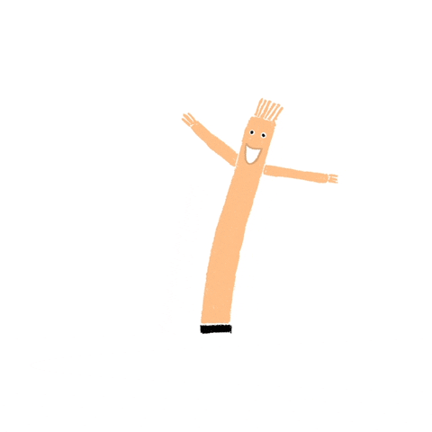
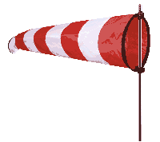
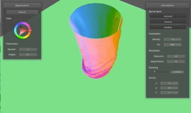
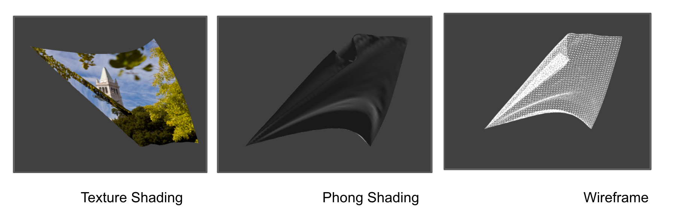
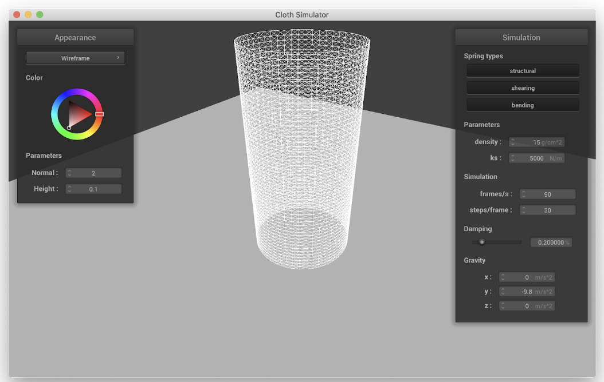
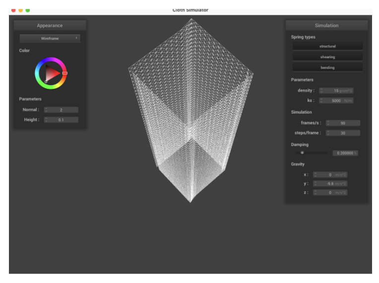

Team Members: Crystal Wang (3034709952), Arushi Somani (3034899544), Ashley Chu (3034858776), Manaal Siddqui (3034654585)
Abstract
The goal of this project is to create a realistic simulation of an inflatable tube man. Our goal was to:
Create a particle simulation engine that models particle movements like wind
Create a material simulation engine that models cloth movement in gravity
Create a physics engine that models the interaction between wind particles and materials like cloth

As we will elaborate in this report, we soon realized that the mesh structure engine that we'd defined
and used in earlier projects was simply not expressive enough to be able to create an inflatable tube man.
Our efforts to extend the kind of structures that the physics relied on— adding "rod" structures modelling
rigidity alongside
the spring structures modelling flexiblity— had to be tabled for pausity of time.
We still wanted to be able to model particle simulation and random motion through inflatable structures
in our project. As such, we pivoted to making a windsock, which let us model similar
interactions with a simpler mesh structure. Thus, our final project goal pivoted to rendering a simulation of windsock movement in air based on wind-cloth physics principles.
Building off of the infrastructure from Project 4, ClothSim, we added wind features, including a GUI that allows users to control the direction and speed of wind using x, y, and z dimensions. With polar coordinates and triangle sorting, we were able to create a tube-like mesh which forms the body of our windsock. We also added streamers to our mesh by dividing the tube into two core parts, head and streamers, and skipping over rows during triangulation to account for the division and separation of streamers. For our windsock appearance, we created new textures using illutrator, and also implemented a Skybox for environment aesthetics.

Technical Approach
We started with our implementation from ClothSim, since we wanted to create an inflatable tube man. The
ClothSim project provided a way to create a mesh and apply forces upon it, and we figured we could build on
that to include wind and internal particle forces and pressure
Wind Simulation
The first part was creating wind! To do so, in cloth->simulate we build off of the loop from the previous
project in which the point mass positions are updated at each time step. We use the point's velocity, find
its normal with pointMass.normal() , set a wind strength constant C, and simply follow the
formula below to calculate wind force. Then it's just a matter of adding it to
pointMass.forces
This next part involved editing the buildGrid function so that the mesh that was created was cylindrical
rather than flat and rectangular. We did this by using polar coordinates, essentially iterating over the
height points and at each height, creating a circle. This meant creating a double nested for loop, with the
first loop being over height points and the second being over angles between 0 and 2PI. Then we can create
Point Masses at
$$(x,y,z) = (h offset * h, r * sin(θ), r * cos(θ)) $$
We also have to account for a weird error that came up in which the cylinder had almost an "arc" subsection
missing, and we did this by accounting for the case that angle >= 2 * PI - incr_amt + 1 , in
which case y is r * sin(0) + 0.0001 and z is r * cos(0) + 0.0001 so that it wraps around the cylinder enough
to enclose it
Moreover, we pin the first 10 "circles" (where h < 10) going up the cylinder to best model our fish wind
sock
Streamers Construction
In order to simulate streamers we needed to essentially divide the mesh into two parts -- the first
part is the tube and the second part is the streamers. Then, we edit spring creation by essentially
skipping every row and delete triangles within those rows. We do this by first converting all the
x-y-z coordinates of the original cloth grid as described above, but also decrement the radius of
the circle with each iteration of the circle to give a tapering off effect. Once we've decided on
how long we want our streamers, we stop decrementing the radius of the cylinder being created (ie.
2/3 of the original width is a tapered tube, and the last 1/3 is held at constant radius)
For spring building, we loop through all the rows of the cylinder and create springs based on
whether the rows/columns are even/odd (ie. structural left springs exist for all rows and columns,
but structural above springs exist for every other row). That takes care of the wireframe mesh, but
in order to make the streamers look plausible in shaders, we add an extra loop after the creation of
all the triangles to only have the shader render and shade every other row of triangles after the
cutoff point for the cylinder (ie. shade the first 2/3 of the width's triangles, but the last 1/3
should remove every other row of triangles).
GUI Additions
Damping, spring, and other constants are labelled within the GUI to make it user-interactive and able
to change how the forces apply. We wanted to expand this to include our new wind simulation, so that
the GUI has labels for the x, y, and z components of wind velocity/direction. we make a few changes
in clothSimulator.cpp. We add wind in the vector of external_accelerations and create a label in the
GUI that changes the x,y,and z components of wind with 3 different floatboxes. Then we edit
cloth->simulate function to pull from external_accelerations the wind vector, which gets applied as
was explained in the Wind Simulation section.
Additional Details
We also wanted to give some aesthetic quality to the wind sock. We created a texture file in Adobe
Illustrator that was mapped over the mesh.
In addition, we added a pole so the wind sock is not flying in empty space. We did this by creating a
very thin sphere in a sphere.json and positioning it with the sock
For the skybox, we added in texture files over the cube. we created new vertex and fragment shaders
and loaded the cubemap images to create a new surrounding environment
The skybox also features a timing feature in which the background changes over time (and thus our windsock can travel to new places!)
Intermediate Results
Below are a few photos demonstrating our results at the midpoint status.
By our milestone, we had completed our basic mesh creation and added wind simulation to our project 4 codebase.




Challenges
We encountered a lot of challenges, from infinite loops to segfaults to git issues to physics
concepts and all in between
One challenge we had was figuring out how the physics of a tube man would work if we wanted it to
look realistic. None of us knew particle physics (or were otherwise adept at physics), and it wasn't
something that had been done before. There wasn't any projects we could draw inspiration from to
build something like that. It took a lot of head-scratching to figure out an idea of how to make an
illusion of real physics -- through a tube man representation as a series of rods and its changes in
internal pressure and external movement as a result of torque between those rods. When pressure
decreases, tube man should bend. We didn't know how to simulate pressure variance through code, so
we thought about an idea where we just calculate torque using forces already acting on the tube man
(ie gravity and wind) except on rods and then pinning and unpinning rods as a crease would go up and
down a tube man. However, when we tried to build this, it didn't work out well. There were issues
with segfaults and infinite loops and overall the physics was still a little fuzzy. So we decided it
was better to pivot
Another challenge we had was enclosing the cylinder. In creating our pointmasses, there was an arc
of the cylinder that was missing -- we used modular arithmetic to close it up.
We also had trouble with the streamers. since we had to create springs for every other row, it was
tricky to implement and required a lot of experimentation before we got it right. We also had to
account for deleting triangle within those rows. It was especially challenging since we hadn't in
the past had experience with cutouts in meshes, or a .dae to go off of.
Finally, it was challenging to navigate CMake and git. CMakeLists was causing issues between our
different machines in builds. Even when we got the builds to run, the outputs would often be
different -- so it didn't work on all of our machines. .gitignore also caused issues. All of this
combined to require us to navigate copy and pasting src folders between our local versions, cloning
and recloning endlessly, creating a bunch of branches, merging to try to fix things, etc
Keytakeaways
One of our key takeaways was that modelling physics is really hard. We were flying blind when it
came to modelling tube man. You have to consider -- what forces does this require? What assumptions
should we make? What can we abstract away? One crucial thing we learned was to account for our
conceptual gaps. It's not really sustainable to jump from 0 to 100, and it's better to build off
what we know or what we can draw inspiration from through past projects and other people's research
or papers. That doesn't mean to just not try new things -- it means to be mindful of the limits we
have, whether it be time or resources to help guide us and gradually build it up.
Another key takeaway we learned was understanding when you need to pivot. We had a lot of lofty
goals, but not a lot of time, and physics understanding, and although the concept of a tube man was
really exciting to us, we learned that sometimes, it's better to take a step back and reassess
realistically. In the real world this is really important. Until now, we've had the benefit of
everyone working on the same project and being able to get support easily because of it. But in the
real world, especially when innovating entirely new things, we're not going to have that privilege
all the time. Understanding a team or your own strengths and weaknesses is hugely important in
understanding what you are capable of. Pivoting also means figuring out how to use the working parts
of what you have and understand into something that's more sustainable
We also learned how to play around with GUIs, and be able to balance aesthetic at the same time as
we do functionality.
Final Results
Here are the final results of our windsock simulation!
Reflection & Collaboration
Manaal worked on wind simulation and the physics behind the tube man!
Crystal worked on implementing streamers and editing the mesh to be a tube, as well as the GUI for
users to control wind speed!
Arushi worked on tube point pinning, indexing, and spring exceptions
Ashley worked on creating a skybox and texture files, researching the physics of the . She also helped record videos for the milestone and final presentation and helped write the project proposal, milestone, and final write-up.
We all split up work on the project proposal, milestone, final presentation, and final writeup!